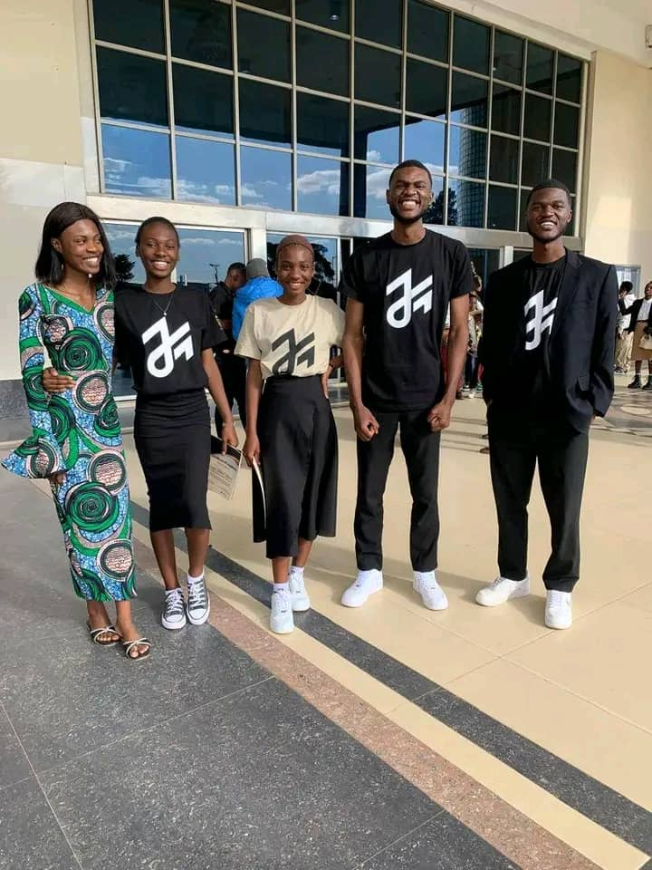

Our story
Make room for
better conversations.
Mundele's Diary began with one belief: communication is not a soft skill. It is how ideas become action, how teams become communities, and how people become leaders.

We believe in
generous candor.
generous candor.
Our point of view
Useful over
impressive.
01
Human first
We meet the person before we meet the presentation.
02
Practice makes present
Confidence is built in small, repeatable moments.
03
Clarity is generous
The clearest message gives everyone more room to participate.